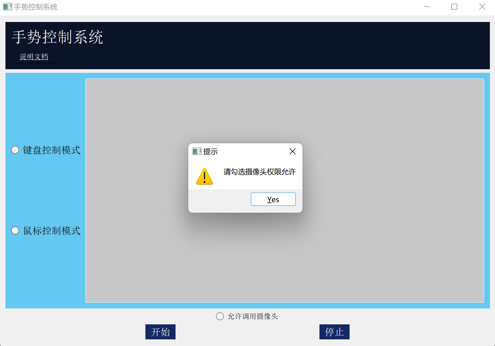
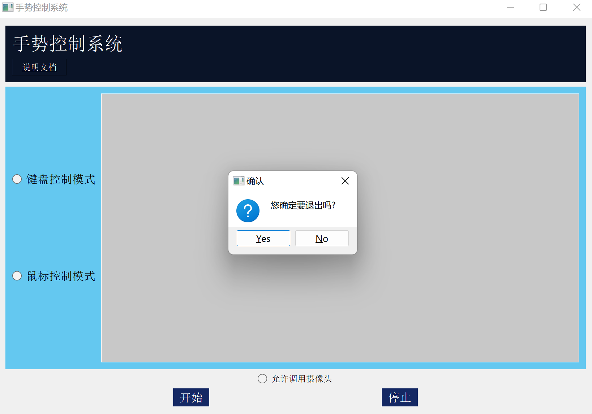

本系统适用于包括但不限于以下需要实时无接触控制的场景：
1.当想要在沙发上或床上舒服地观看一部电影时，由于离鼠标和键盘的位置较远，不方便频繁地起身来控制鼠标和键盘；
2.当您一边看视频一边吃炸鸡时，由于手被炸鸡弄脏，不能直接用手触碰鼠标和键盘，或嫌擦手麻烦；
3.当您跟着视频做运动时，由于离鼠标和键盘的位置较远，频繁去鼠标和键盘的位置控制视频会打乱运动的节奏；
......
手势控制系统包括键盘控制模式和鼠标控制模式。
用手势控制电脑键盘：
如下图所示，当用手分别比出“1”，“2”，“3”，“4”，“5”时，窗口中会显示识别出的数字。
这些数字分别代表控制键盘的“空格键”，“右键”，“左键”，“提高音量键”，“降低音量键”。

如下图所示，当两只手的手指同时展开比出“5”时，会暂停手势识别，系统会进行语音提醒，这时，上述的手部动作将不再被识别。
用手势控制鼠标：
如下图所示，当一只手的食指展开，同时其他手指握紧时，代表控制鼠标的移动。
窗口中会显示手的移动范围，对应鼠标在屏幕中的范围。
如下图所示，当一只手的食指展开的同时，大拇指展开，代表鼠标的单击行为。
与键盘模式相同，当两只手的手指同时展开比出“5”时，会暂停手势识别，系统会进行语音提醒，这时，上述的手部动作将不再被识别。
可以通过手势随时自由切换上述两种模式：
如下图所示，当抬起双手，使两只手的手肘都高于肩膀时，系统就会从当前模式切换到另一种模式，同时系统会进行语音提醒。
1.在点击“开始”之前，需要首先选中“允许调用摄像头”来给予摄像头权限，否则如下图所示会弹出提示窗口，无法进行手势识别。
2.在点击“开始”之前，可以先选择需要的控制模式，点击“开始”之后就会进入对应模式；如果未选择任何模式，则自动进入键盘控制模式。
3.在进行手势识别时，也可以随时选中另一模式来更换手势控制模式。
4.点击“停止”后，会停止手势识别，并关闭摄像头。
5.点击关闭界面后，如下图所示，会先弹出确认窗口，点击确认窗口中的“Yes”后，会关闭窗口，同时关闭摄像头；点击确认窗口中的“No”后，会回到原界面。
